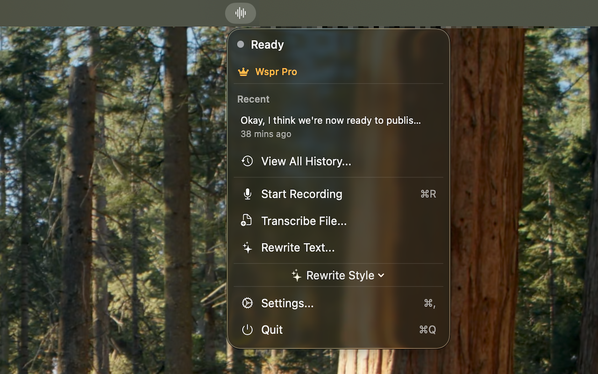
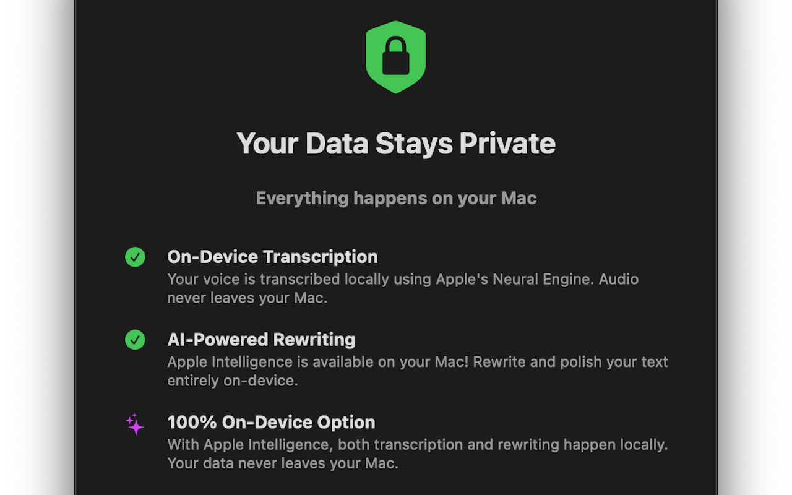
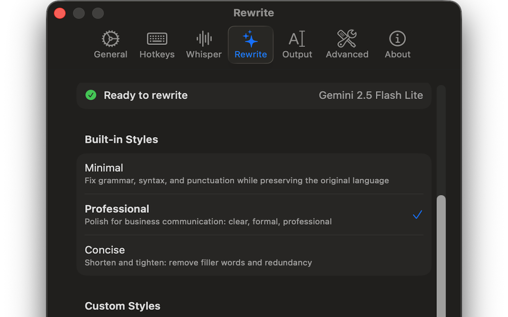
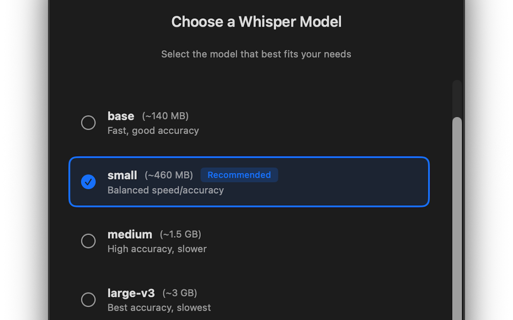

On-device speech transcription for macOS
Press a hotkey, speak, and your words appear as text. All processing happens locally on your Mac using Apple Neural Engine. No cloud. No accounts. No tracking.
Download on the Mac App Store
Features
Wspr lives in your menu bar and works with any app. Powered by WhisperKit and the Apple Neural Engine for fast, accurate, on-device transcription.
Press a global hotkey from any app. Speak naturally and your words are transcribed in real time, then pasted or copied to your clipboard.
Option+Space by default, fully customizable. Start and stop recording from anywhere on your Mac without switching apps.
Polish transcriptions with AI. Built-in styles for minimal, professional, or concise output. Use Apple Intelligence on-device or cloud providers.
Drop audio or video files to transcribe them. Supports MP3, WAV, M4A, MP4, MOV and more. Ideal for meetings, lectures, and interviews.
Whisper models support 99 languages with automatic detection. Transcribe English, French, Spanish, Japanese, Arabic, and many more.
Always one click away. View recent transcriptions, start recording, transcribe files, and manage rewrite styles right from the menu bar.

Privacy First
Wspr processes everything locally. Your voice never leaves your device. No servers, no accounts, no analytics, no tracking.

AI Rewriting
Automatically clean up transcriptions with built-in rewrite styles, or create your own. Choose your preferred AI provider.

Whisper Models
Wspr ships with four WhisperKit models optimized for Apple Silicon. Pick the one that fits your workflow.
Pricing
No subscription. No recurring fees. Pay once and own Wspr Pro for life.
$0
Get started instantly
$14.99
One-time purchase. No subscription.
Download for free on the Mac App Store. Start transcribing in seconds.
Download on the Mac App Store